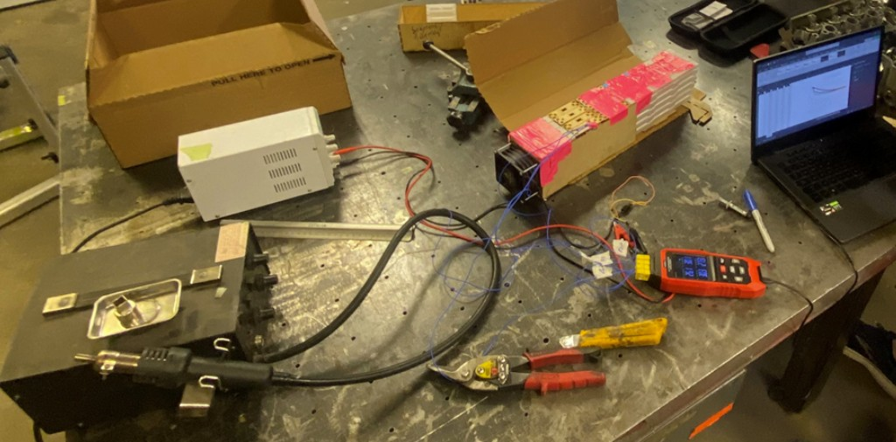
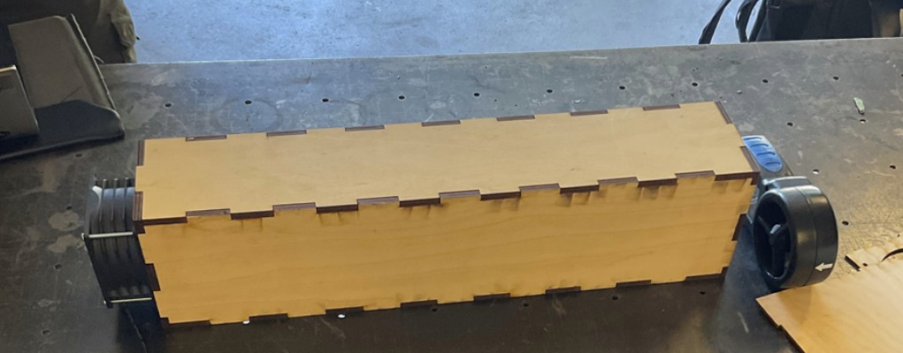
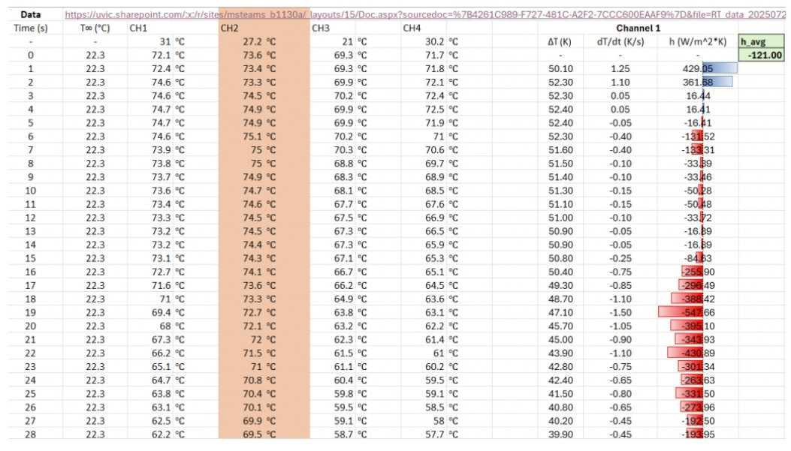

Designed, fabricated, and executed testing projects on battery pack segments to evaluate heat dissipation effects and required cooling power.



- Designed and laser cut components to create mock battery segments with representative cell modules.
- Utilized thermocouples to obtain heat transfer in aluminum slug cells to receive temperature data, allowing for calculation of the heat transfer coefficient.
- Calculated required volumetric flow rates and static pressure requirements to specify fan power, ensuring the thermal system could maintain cell temperatures below the 60°C critical threshold during peak discharge cycles.
- Compiled results and documented findings to share through design review meetings, influencing the final battery pack cooling architecture.
Role
Mechanical Design Engineer
Location
Victoria
Tools
SolidWorks, Lasercutter, Thermocouples, Microsoft Office